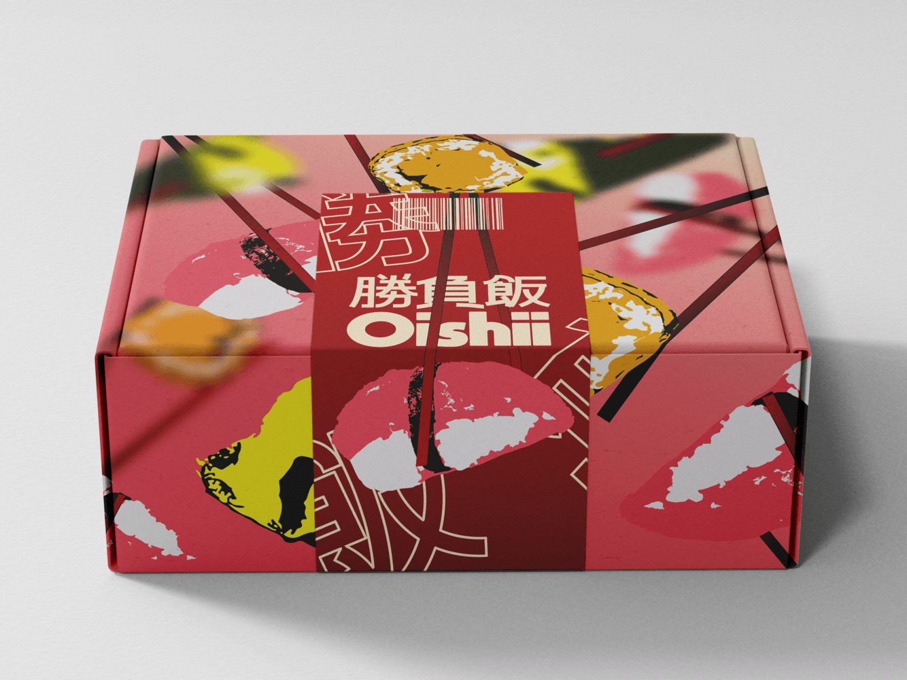
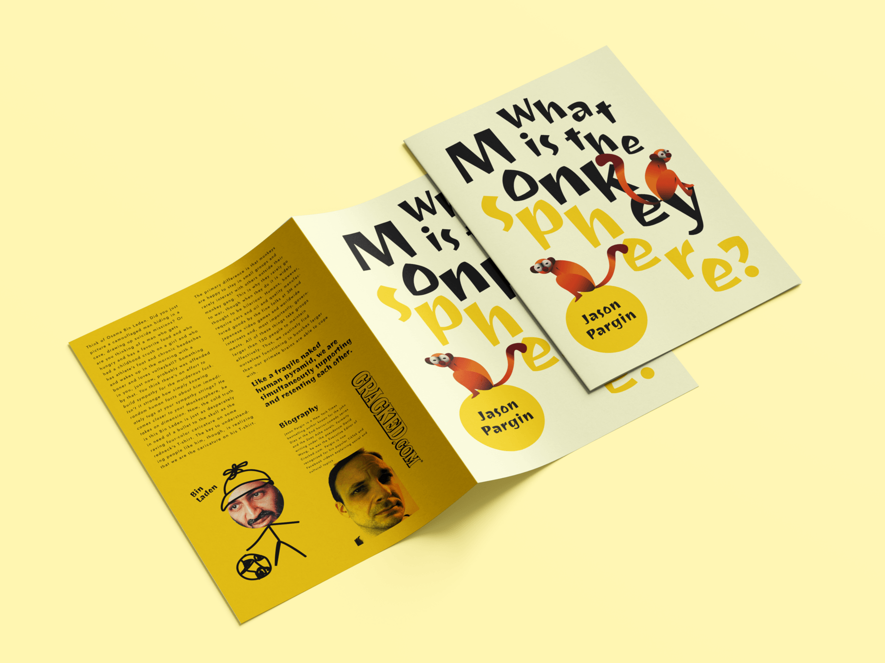
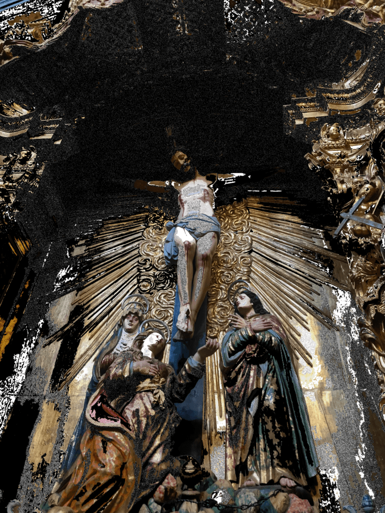
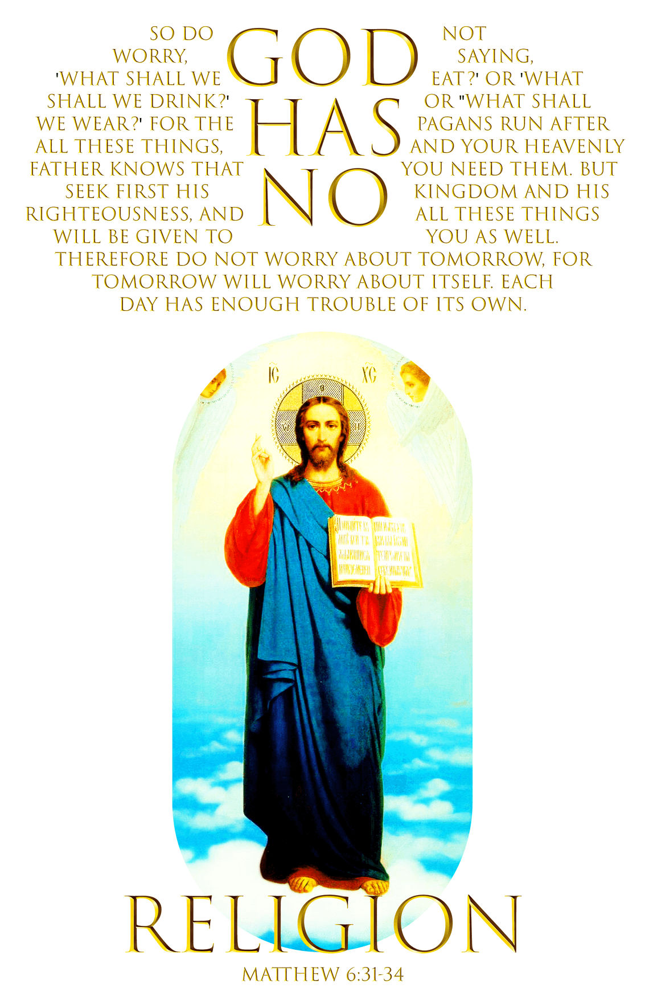
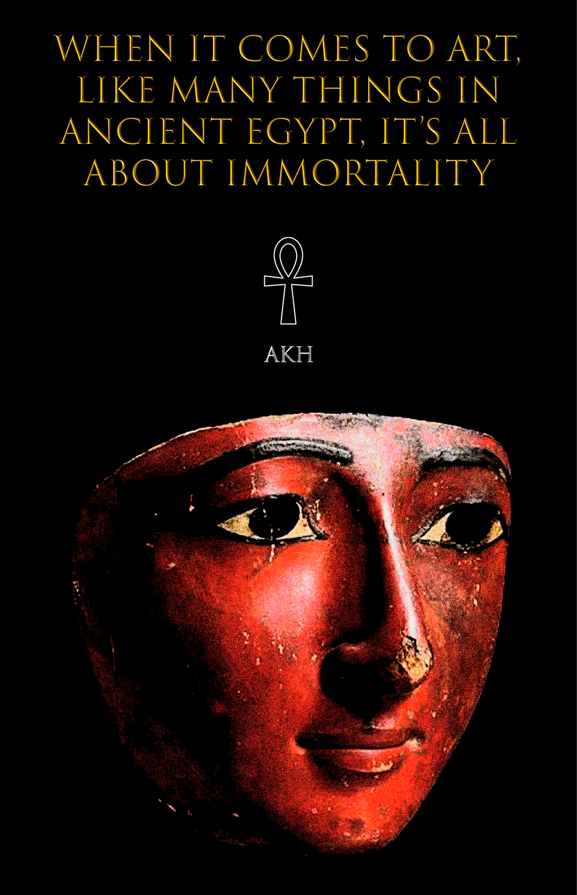

Concept projects and branding
(2025–2026)
Here are some of my favorite flyer designs and conceptual branding projects.

The Future Without Oil
Concept flyer based on an article by Margaret Atwood, using clean vector elements and structured typography. The design focuses on readability while maintaining a visually engaging composition.

The Fresh Market
Brand identity for a local market, built around bright geometric vector elements combined with soft background tones. The visual language is playful and welcoming, aiming to attract a broad and diverse audience.

Salsa Blaze
Brand identity for a Mexican sauce concept, centered around the intensity and variety of traditional peppers. Designed for a younger adult audience, the project aims to visually communicate boldness and experimentation through color and composition.

Oishii
Brand identity for a sushi restaurant, using vibrant colors and high image saturation inspired by contemporary Japanese visual culture. The goal was to create an energetic and eye-catching identity that attracts new customers.

Church of Our Lady of Carmo Flyer
Concept flyer inspired by the Church of Our Lady of Carmo, exploring the contrast between blue and yellow tones. The design aims for a clean and elegant aesthetic suited for visitors and cultural promotion.

What Is the Monkeysphere?
Concept flyer based on an article by Jason Pargin, designed for a younger audience. The project explores bold imagery and vibrant color as primary tools to capture attention and guide the reader through the content.
Editorial design
(2025–2026)
Editorial projects created primarily in InDesign and Illustrator, both written and illustrated by me.

Retrato de Juventude
Editorial project exploring childhood and the formation of identity. The publication combines personal memories with abstract elements to reflect on growth, nostalgia, and the less visible aspects of personal history.

O Sonho da Floresta
Animated project reflecting on the emotional cycle of life through nature. Animals, plants, and seasonal elements act as metaphors for different stages of personal growth and emotional transformation.
Visual experimentations
2024–2026
Some of my favorite posters and vector artwork, exploring different styles and themes.








